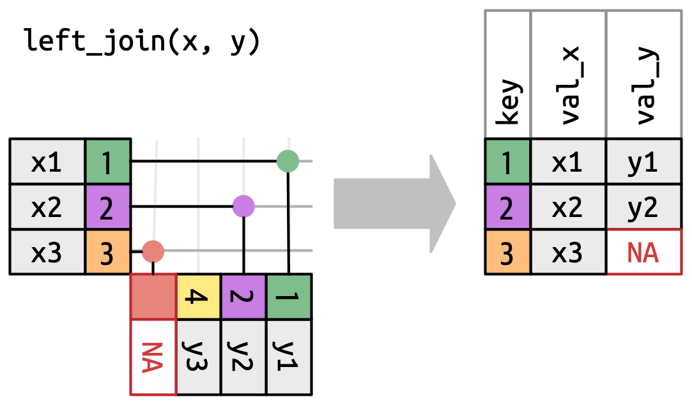

Advanced Data Manipulation with dplyr and tidyr
Parks Canada; Ecological Integrity Monitoring Program
Schedule
| Pacific Time | Eastern Time | Duration |
|---|---|---|
| 09:00 - 10:20 | 12:00 – 13:20 | 80 min |
| Break | Break | 15 min |
| 10:35 – 11:55 | 13:35 – 14:55 | 80 min |
| Break | Break | 15 min |
| 12:10 – 13:30 | 15:10 – 16:30 | 80 min |
Outline
Today
dplyrfundamentals review- Column-wise operations
- Two-table verbs (joins)
- Data reshaping with
tidyr - Programming with R - Functions
Next time
- Programming with R - iteration
- Reproducible reporing with Quarto
Data
Using data from the Portal Project
Long-term ecological research site studying the dynamics of desert rodents, plants, ants and weather in Arizona.
Data available from the GitHub repo via the portalr package.
Setup
- Create a new project in Positron
- Either:
- Fork and clone the exercises repository:
https://github.com/ateucher/pc-data-manipulation/OR - Run:
- Fork and clone the exercises repository:
Open the file:
01-get-data.RDownload the data:
- Explore the downloaded data in Positron
Warm-up
Read in the rodent capture data (PortalData/Rodents/Portal_rodent.csv).
- Use
readr::read_csv()and assign it to a data frame calledrodents. - Standardize column names to use
snake_case(hint: check out thejanitorpackage)
Review of main dplyr operations
- Select columns with
select() - Keep rows based on their values with
filter() - Create new columns with
mutate() - Summarize data with
summarize() - Sort rows based on column values with
arrange() - “Slice” rows with
slice()/slice_*()
- Grouping data with
group_by()appliesfilter(),mutate(),summarize(), andslice()by group
Using select()
Select columns with bare names
# A tibble: 344 × 3
species island body_mass_g
<fct> <fct> <int>
1 Adelie Torgersen 3750
2 Adelie Torgersen 3800
3 Adelie Torgersen 3250
4 Adelie Torgersen NA
5 Adelie Torgersen 3450
# ℹ 339 more rowsUse all_of() or any_of() to select columns from a character vector
all_of(): throws an error if any names are not foundany_of(): ignores names that are not found
# A tibble: 344 × 4
species sex bill_length_mm bill_depth_mm
<fct> <fct> <dbl> <dbl>
1 Adelie male 39.1 18.7
2 Adelie female 39.5 17.4
3 Adelie female 40.3 18
4 Adelie <NA> NA NA
5 Adelie female 36.7 19.3
# ℹ 339 more rowsYour turn: Select record_id, id, and species from rodents
selection helpers
select specific columns:
everything(): Matches all variables.last_col(): Select last variable, possibly with an offset.group_cols(): Select all grouping columns.
select columns based on name patterns:
starts_with(): Starts with a prefix.ends_with(): Ends with a suffix.contains(): Contains a literal string.matches(): Matches a regular expression.
select columns based on data type:
where(): Select columns based on a predicate function (a function that returnsTRUEorFALSE).
See help with ?select
Your turn
Using the rodents data.frame:
Select the
idcolumn and all of the numeric columnsSelect all columns except the columns starting with
"note"Reorder the columns, moving the last column to the first position, without specifying any column names
Using filter()
To retain only a subset of rows:
# A tibble: 152 × 8
species island bill_length_mm bill_depth_mm flipper_length_mm body_mass_g sex year
<fct> <fct> <dbl> <dbl> <int> <int> <fct> <int>
1 Adelie Torgersen 39.1 18.7 181 3750 male 2007
2 Adelie Torgersen 39.5 17.4 186 3800 female 2007
3 Adelie Torgersen 40.3 18 195 3250 female 2007
4 Adelie Torgersen NA NA NA NA <NA> 2007
5 Adelie Torgersen 36.7 19.3 193 3450 female 2007
# ℹ 147 more rowsCombine multiple filter() conditions with , or & (AND) and | (OR):
# A tibble: 52 × 8
species island bill_length_mm bill_depth_mm flipper_length_mm body_mass_g sex year
<fct> <fct> <dbl> <dbl> <int> <int> <fct> <int>
1 Adelie Torgersen 39.1 18.7 181 3750 male 2007
2 Adelie Torgersen 39.5 17.4 186 3800 female 2007
3 Adelie Torgersen 40.3 18 195 3250 female 2007
4 Adelie Torgersen NA NA NA NA <NA> 2007
5 Adelie Torgersen 36.7 19.3 193 3450 female 2007
# ℹ 47 more rows# A tibble: 153 × 8
species island bill_length_mm bill_depth_mm flipper_length_mm body_mass_g sex year
<fct> <fct> <dbl> <dbl> <int> <int> <fct> <int>
1 Adelie Torgersen 39.1 18.7 181 3750 male 2007
2 Adelie Torgersen 39.5 17.4 186 3800 female 2007
3 Adelie Torgersen 40.3 18 195 3250 female 2007
4 Adelie Torgersen NA NA NA NA <NA> 2007
5 Adelie Torgersen 36.7 19.3 193 3450 female 2007
# ℹ 148 more rowsUsing mutate()
Create new columns or modify existing columns:
# A tibble: 344 × 9
species island bill_length_mm bill_depth_mm flipper_length_mm body_mass_g sex year mass_kg
<fct> <fct> <dbl> <dbl> <int> <int> <fct> <int> <dbl>
1 Adelie Torgersen 39.1 18.7 181 3750 male 2007 3.75
2 Adelie Torgersen 39.5 17.4 186 3800 female 2007 3.8
3 Adelie Torgersen 40.3 18 195 3250 female 2007 3.25
4 Adelie Torgersen NA NA NA NA <NA> 2007 NA
5 Adelie Torgersen 36.7 19.3 193 3450 female 2007 3.45
# ℹ 339 more rowsCreate multiple columns in one mutate call:
# A tibble: 344 × 10
species island bill_length_mm bill_depth_mm flipper_length_mm body_mass_g sex year mass_kg bill_ratio
<fct> <fct> <dbl> <dbl> <int> <int> <fct> <int> <dbl> <dbl>
1 Adelie Torgersen 39.1 18.7 181 3750 male 2007 3.75 2.09
2 Adelie Torgersen 39.5 17.4 186 3800 female 2007 3.8 2.27
3 Adelie Torgersen 40.3 18 195 3250 female 2007 3.25 2.24
4 Adelie Torgersen NA NA NA NA <NA> 2007 NA NA
5 Adelie Torgersen 36.7 19.3 193 3450 female 2007 3.45 1.90
# ℹ 339 more rowsThe pipe ( |> )
The pipe operator (|>) passes the output of one function as the first argument to the next function. It allows us to chain together multiple operations in a readable way.
- Helps avoid deeply nested function calls, which are hard to read.
- Helps avoid creating many intermediate variables.
Read it out loud as “and then”
# A tibble: 172 × 3
species island body_mass_g
<fct> <fct> <int>
1 Adelie Torgersen 4675
2 Adelie Torgersen 4250
3 Adelie Torgersen 4400
4 Adelie Torgersen 4500
5 Adelie Torgersen 4200
# ℹ 167 more rowsUsing group_by()
Add grouping attributes that tell other dplyr functions to operate by group:
# A tibble: 172 × 3
# Groups: species, island [5]
species island body_mass_g
<fct> <fct> <int>
1 Adelie Torgersen 4675
2 Adelie Torgersen 4250
3 Adelie Torgersen 4400
4 Adelie Torgersen 4500
5 Adelie Torgersen 4200
# ℹ 167 more rowsUsing summarize()
Creates one summary row per unique combination of groups:
# A tibble: 5 × 3
# Groups: species [3]
species island sd_mass
<fct> <fct> <dbl>
1 Adelie Biscoe 268.
2 Adelie Dream 170.
3 Adelie Torgersen 191.
4 Chinstrap Dream 230.
5 Gentoo Biscoe 496.Your turn - pulling it all together
Using the rodents data set find the mean hindfoot length per weight of Merriam’s Kangaroo Rats ("DM") grouped by plot and arranged by thew new hfl per weight column.
dplyr practice
Remove records from invalid sampling periods (when
periodis negative). Re-assign the result to therodentsdata frame.How many individuals of each species were caught in 1995?
What date had the highest number of individual rodents caught?
Key columns
id= individual identifierday,month,year= date of captureperiod= sampling periodspecies= species codewgt= weight (grams)year= year of capture
dplyr practice
For each capture record, calculate the percent difference in weight from the average weight of that species.
Of all individual Ord’s Kangaroo Rats (species code “DO”) that have been caught more than 5 times, which individual was consistently the biggest? (i.e., has the highest average percent difference in weight from the species’ average weight)?
Key columns
id= individual identifierday,month,year= date of captureperiod= sampling periodspecies= species codewgt= weight (grams)year= year of capture
Column-wise operations
- Apply one or more functions to a set of columns in a data frame using
across()
- Specify columns using a vector of names or selection helpers (e.g.,
starts_with(),ends_with(),contains(),where(), etc.) - Specify function(s) to apply to selected columns
- Used with
summarize()&mutate()
Your turn
- Scale
hflandwgt(useacross()) inrodentsto have mean 0 and standard deviation 1. (Hint: Check out thescale()function) - Bonus: Use the
.namesargument to keep the original columns and give the new columns a sensible name - See help with
?across
Column-wise operations
Specify multiple functions to apply to selected in a named list()
Example: calculate mean and sd of all numeric columns
# A tibble: 3 × 21
cyl mpg_mean mpg_sd disp_mean disp_sd hp_mean hp_sd drat_mean drat_sd wt_mean wt_sd qsec_mean qsec_sd
<dbl> <dbl> <dbl> <dbl> <dbl> <dbl> <dbl> <dbl> <dbl> <dbl> <dbl> <dbl> <dbl>
1 4 26.7 4.51 105. 26.9 82.6 20.9 4.07 0.365 2.29 0.570 19.1 1.68
2 6 19.7 1.45 183. 41.6 122. 24.3 3.59 0.476 3.12 0.356 18.0 1.71
3 8 15.1 2.56 353. 67.8 209. 51.0 3.23 0.372 4.00 0.759 16.8 1.20
# ℹ 8 more variables: vs_mean <dbl>, vs_sd <dbl>, am_mean <dbl>, am_sd <dbl>, gear_mean <dbl>, gear_sd <dbl>,
# carb_mean <dbl>, carb_sd <dbl>Column-wise operations
Run this in your R session, what do you get?
# A tibble: 1 × 10
bill_length_mm_mean bill_length_mm_sd bill_depth_mm_mean bill_depth_mm_sd flipper_length_mm_mean
<dbl> <dbl> <dbl> <dbl> <dbl>
1 NA NA NA NA NA
# ℹ 5 more variables: flipper_length_mm_sd <dbl>, body_mass_g_mean <dbl>, body_mass_g_sd <dbl>,
# year_mean <dbl>, year_sd <dbl>- When we use a function in
across()it is called with its default argumentsmean()andsd()both have an argumentna.rmthat defaults toFALSE
- We can’t pass extra arguments to functions inside
across()directly - We need to specify a function with the argument values we want “baked in”
Specifying extra arguments
We can define our own helper functions:
# A tibble: 1 × 10
bill_length_mm_mean bill_length_mm_sd bill_depth_mm_mean bill_depth_mm_sd flipper_length_mm_mean
<dbl> <dbl> <dbl> <dbl> <dbl>
1 43.9 5.46 17.2 1.97 201.
# ℹ 5 more variables: flipper_length_mm_sd <dbl>, body_mass_g_mean <dbl>, body_mass_g_sd <dbl>,
# year_mean <dbl>, year_sd <dbl>Specifying extra arguments
But if we’re doing this only once we can define them in place with an anonymous function:
\(x)is shorthand forfunction(x), used for anonymous functions- This defines a function “on the fly” with the arguments specified how we want
- The
xwill take the values of each column passed to it byacross()
# A tibble: 1 × 10
bill_length_mm_mean bill_length_mm_sd bill_depth_mm_mean bill_depth_mm_sd flipper_length_mm_mean
<dbl> <dbl> <dbl> <dbl> <dbl>
1 43.9 5.46 17.2 1.97 201.
# ℹ 5 more variables: flipper_length_mm_sd <dbl>, body_mass_g_mean <dbl>, body_mass_g_sd <dbl>,
# year_mean <dbl>, year_sd <dbl>Your turn
- Calculate maximum of all bill measurements for each species in the built-in penguins dataset.
- Calculate the median of hind-foot length (
hfl) and weight (wgt) for each species inrodents, ignoringNAvalues.
Two-table verbs (joins)
Mutating joins
- Combine two tables based on common values in one or more columns
Filtering joins
- Filter rows from one table based on values in another table
Mutating joins
left_join()
- Keeps all rows in the left table
- Drops rows from the right table that don’t match
- Rows in the left that don’t match get
NAin the columns from the right table

Mutating joins
right_join()
- Keeps all rows in the right table
- Drops rows from the left table that don’t match
- Rows in the right table that don’t match get
NAin the columns from the left table

Mutating joins
inner_join()
- Keeps all rows in both tables where keys match
- Rows from either table that don’t match are dropped
Mutating joins
full_join()
- Keeps all rows in both tables
- Values in x and y that don’t match get
NAin the result

Join syntax
If don’t specify join columns, will join on all common names
- E.g., both tables have columns year, month, day
Better to specify the join columns explicitly
- Both tables have columns column_1 and column_2
- If the columns to join on have different names in each table
Your turn
Use a join to add location information to the rodent captures data
What kind of join would be appropriate here?
The rodent captures data is in the
PortalData/Rodents/Portal_rodent.csvfile.The
SiteandMethods/Portal_UTMCoords.csvfile contains information about the location of each plot
Filtering joins
semi_join()
- Keeps all rows in the left table where there are matching key values in the right table
- Does not add any columns

Filtering joins
anti_join()
- Keeps all rows in the left table where there are not matching values in the right table
- Does not add any columns
Your turn
Use a join to find all the captures where the species is a granivore
- The rodent captures data is in the
PortalData/Rodents/Portal_rodent.csvfile - The
PortalData/Rodents/Portal_rodent_species.csvfile contains information about the species
More complex joins using dplyr::join_by().
Cross joins create the full cartesian product of two tables
a b
1 1 x
2 1 y
3 2 x
4 2 y
5 3 x
6 3 yOverlap joins
Your turn
Using the rodent trapping data and the plant census dates data, join the two datasets to find out which plant census (year and season) each rodent capture is associated with.
Starting code:
- Hint: use an overlap join with
between()
Tidying data with tidyr
“Happy families are all alike; every unhappy family is unhappy in its own way.”
— Leo Tolstoy
“Tidy datasets are all alike, but every messy dataset is messy in its own way.”
— Hadley Wickham
What is tidy data?
- Each variable is a column; each column is a variable.
- Each observation is a row; each row is an observation.
- Each value is a cell; each cell is a single value.

Wide vs. long (tidy) data
- Wide data often has “data” stored in the column names
- Example: dates, treatment groups, measurement types
| subject | treatment_A | treatment_B |
|---|---|---|
| 1 | 5 | 7 |
| 2 | 6 | 8 |
| subject | treatment | value |
|---|---|---|
| 1 | A | 5 |
| 1 | B | 7 |
| 2 | A | 6 |
| 2 | B | 8 |
| id | 20250101 | 20250201 |
|---|---|---|
| 1 | 150 | 165 |
| 2 | 125 | 118 |
- Dates are stored in the column names
- Values are masses (in grams).
| id | date | mass |
|---|---|---|
| 1 | 2025-01-01 | 150 |
| 1 | 2025-02-01 | 165 |
| 2 | 2025-01-01 | 125 |
| 2 | 2025-02-01 | 118 |
Example - billboard data
# A tibble: 317 × 79
artist track date.entered wk1 wk2 wk3 wk4 wk5 wk6 wk7 wk8 wk9 wk10 wk11 wk12 wk13
<chr> <chr> <date> <dbl> <dbl> <dbl> <dbl> <dbl> <dbl> <dbl> <dbl> <dbl> <dbl> <dbl> <dbl> <dbl>
1 2 Pac Baby… 2000-02-26 87 82 72 77 87 94 99 NA NA NA NA NA NA
2 2Ge+her The … 2000-09-02 91 87 92 NA NA NA NA NA NA NA NA NA NA
3 3 Doors Do… Kryp… 2000-04-08 81 70 68 67 66 57 54 53 51 51 51 51 47
4 3 Doors Do… Loser 2000-10-21 76 76 72 69 67 65 55 59 62 61 61 59 61
5 504 Boyz Wobb… 2000-04-15 57 34 25 17 17 31 36 49 53 57 64 70 75
# ℹ 312 more rows
# ℹ 63 more variables: wk14 <dbl>, wk15 <dbl>, wk16 <dbl>, wk17 <dbl>, wk18 <dbl>, wk19 <dbl>, wk20 <dbl>,
# wk21 <dbl>, wk22 <dbl>, wk23 <dbl>, wk24 <dbl>, wk25 <dbl>, wk26 <dbl>, wk27 <dbl>, wk28 <dbl>,
# wk29 <dbl>, wk30 <dbl>, wk31 <dbl>, wk32 <dbl>, wk33 <dbl>, wk34 <dbl>, wk35 <dbl>, wk36 <dbl>,
# wk37 <dbl>, wk38 <dbl>, wk39 <dbl>, wk40 <dbl>, wk41 <dbl>, wk42 <dbl>, wk43 <dbl>, wk44 <dbl>,
# wk45 <dbl>, wk46 <dbl>, wk47 <dbl>, wk48 <dbl>, wk49 <dbl>, wk50 <dbl>, wk51 <dbl>, wk52 <dbl>,
# wk53 <dbl>, wk54 <dbl>, wk55 <dbl>, wk56 <dbl>, wk57 <dbl>, wk58 <dbl>, wk59 <dbl>, wk60 <dbl>, …How would we plot this data to show how the rank of different songs changed over time?
What shape would this data have in long format?
tidyr::pivot_longer()
Reshape data from wide to long format
pivot_longer(
data,
cols,
...,
cols_vary = "fastest",
names_to = "name",
names_prefix = NULL,
names_sep = NULL,
names_pattern = NULL,
names_ptypes = NULL,
names_transform = NULL,
names_repair = "check_unique",
values_to = "value",
values_drop_na = FALSE,
values_ptypes = NULL,
values_transform = NULL
)cols: columns to pivot from wide to long. Uses tidyselect syntax.names_to: name of new column to create from the column namesvalues_to: name of new column to create from the values in the selected columnsvalues_drop_na: ifTRUE, drops rows withNAin the values column
Let’s practice with the billboard data
Your turn
- Use
SitesandMethods/Portal_plot_treatments.csvand pivot it to longer so there is a start_date, end_date, and treatment column. See if you can get the dates into proper date format. Thelubridatepackage may be helpful.